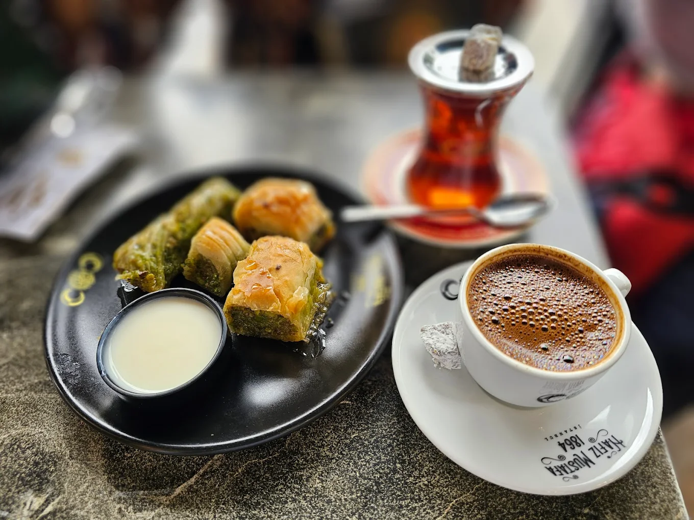
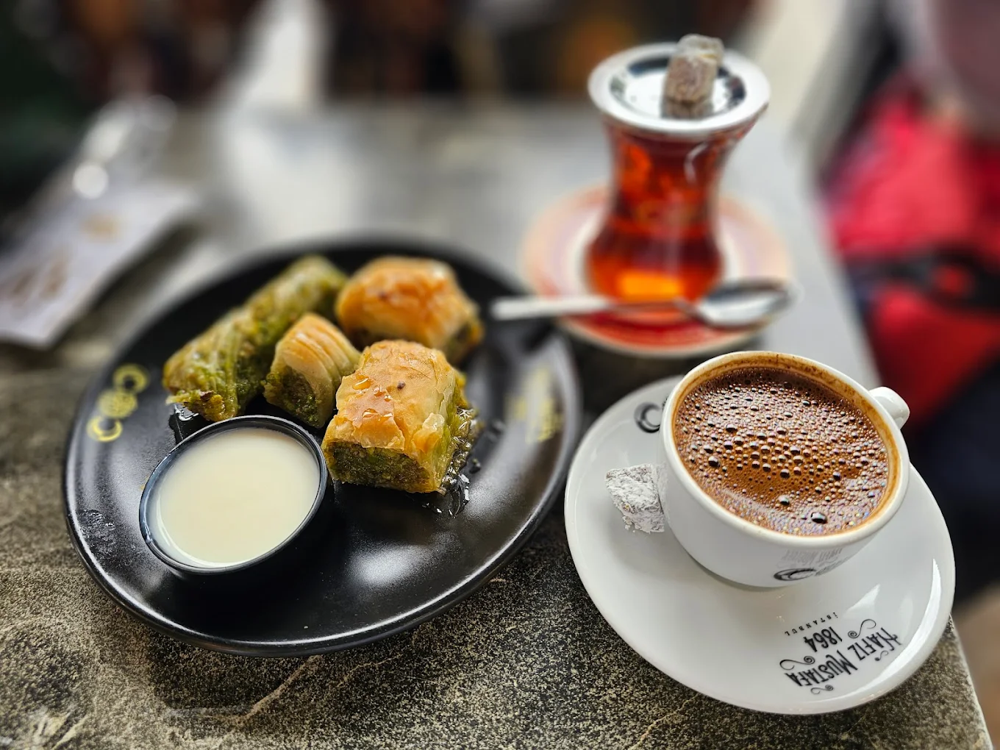

Why Istanbul?
Istanbul, the former captial of the Ottoman Empire
Istanbul is a major city in Turkey that straddles Europe and Asia across the Bosphorus Strait. Its Old City reflects cultural influences of the many empires that once ruled here. In the Sultanahmet district, the open-air, Roman-era Hippodrome was for centuries the site of chariot races, and Egyptian obelisks also remain. The iconic Byzantine Hagia Sophia features a soaring 6th-century dome and rare Christian mosaics.
CAFÉS & RESTAURANTS
My favourite cafés and restaurants in Istanbul
 

Hafiz Mustafa
This is a legendary café serving Turkish style çay, Turkish coffee and an assortment of Turkish desserts, mostly known for baklava.
Learn more